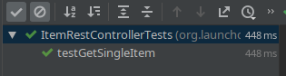
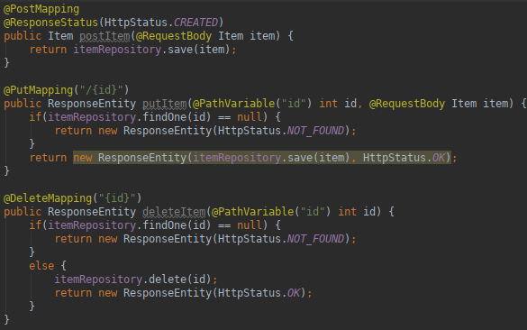
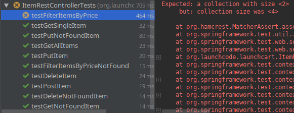
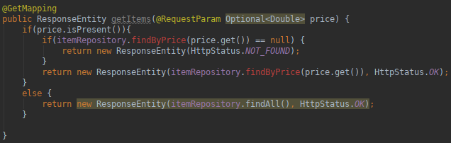

In this walkthrough, the instructor will guide you through adding some RESTful endpoints to the LaunchCart application.
Concept: REST
- REST stands for:
- Representational
- State
- Transfer
Our web application has access to data, and we want to make that data accessible to the user. We are going to pass a representation of that data to the user. The user can make as many changes to their representation of the data as they’d like. If they want to save those changes, they will send back a new representation of their data that reflects their changes. Our web application will then be able to update our data store appropriately based on the new representation sent by the user.
In this class we will use JSON as the representation of our data, but other ways of representing data include: XML, YAML, TOML, etc.
We will be using HTTP to send these representational states back and forth as it’s the primary protocol used by web applications.
- There are four HTTP methods we will use in our RESTful APIs:
-
- The HTTP method defines what the user is trying to do with their representational state.
- A GET request is asking for an existing resource. The HTTP Response would include a JSON representation of the resource if it exists.
- A POST request is sending a representation (JSON) of a resource that the user would like to save. The HTTP Response needs to acknowledge that the representation of the data was stored successfully.
- A PUT request is sending a representation (JSON) of an existing resource that needs to be updated. The HTTP Response needs to acknolwedge that the changes have been saved, and the resource was updated succssfully.
- A DELETE request is asking that an existing resource needs to be deleted. The HTTP Response needs to acknowledge that the resource was successfully deleted.
- Takeaways:
- GET, and a DELETE requests don’t need to include a representation of the resource in the HTTP Request. The resource that needs to be retrieved, or deleted is indicated by the URL.
- POST, and PUT requests require a representatoin of the resouce to be included in the HTTP Request. The HTTP Response may, or may not include a JSON representation of the data that was saved/updated.
Getting Started
From the same launchcart project/repository that you used previously, check out the rest-walkthrough-starter branch. Then create a story branch.:
$ git checkout rest-walkthrough-starter
$ git checkout -b rest-walkthrough-starter-solution
If you haven’t already, install the Rested browser plugin: Firefox | Chrome. We’ll use this to manually query our REST API. If you are familiar with cURL then you may also use that tool to query the API.
What’s New
This starter code has some functionality beyond what you added in Studio: LaunchCart Part 2. In particular, it has a Customer class, along with functionality for users to register and log in as customers.
Hint
A good way to see what has been added in a branch is to you use the comparison feature of Gitlab.
Example: View the launchcart branches and notice the Compare button next to each branch.
This can also be done in the terminal using git:
$ git diff launchcart2 rest-walkthrough-starter
Understanding our Tests
TDD has already been done for us in this walkthrough. Since the tests have already been written, we simply need to write the code to get our tests to pass.
Let’s look at our tests, so we can understand what code we need to write.
testGetAllItems
- HTTP Request:
- Method: GET
- Endpoint:
/api/items
- JSON: None
- Server Action:
- Handle HTTP Request
- Retrieve all item records from the datastore
- Convert item records to item objects
- Create representation of item objects as JSON
- Return HTTP Response with newly created JSON
- HTTP Response:
- Status: 200
- JSON: Representation of ALL Item records
testGetSingleItem
- HTTP Request:
- Method: GET
- Endpoint:
/api/items/{item_uid}
- JSON: None
- Server Action:
- Handle HTTP Request
- Retrieve item record with uid=item_uid from the datastore
- Convert item record to item object
- Create representation of item object as JSON
- Return HTTP Response with newly created JSON
- HTTP Response:
- Status: 200
- JSON: Representation of ONE Item record that matches the item_uid
testGetNotFoundItem
- HTTP Request:
- Method: GET
- Endpoint:
/api/items/{item_uid} – this item_uid doesn’t exist in our datastore
- JSON: None
- Server Action:
- Handle HTTP Request
- Recognize item_uid does not exist in datastore
- Return HTTP Response with status 404
- HTTP Response:
-
testPostItem
- HTTP Request:
- Method: POST
- Endpoint:
/api/items
- JSON: Representation of an Item object, not including the uid
- Server Action:
- Handle HTTP Request
- Create item object by parsing it’s representation from the incoming JSON
- Save item object to the data store as a record
- Return HTTP Response with status 201
- HTTP Response:
-
testPutItem
- HTTP Request:
- Method: PUT
- Endpoint:
/api/items/{item_uid}
- JSON: Representation of an UPDATED Item object, optionally including the uid
- Server Action:
- Handle HTTP Request
- Retrieve item record with uid=item_uid from the datastore
- Convert item record to item object
- Update item object based on the incoming JSON that represents an item
- Save updated item object to datastore
- Create JSON representation of item object
- Return HTTP Response with newly created JSON
- HTTP Response:
- Status: 200
- JSON: Representation of newly UPDATED Item record
testPutNotFoundItem
- HTTP Request:
- Method: PUT
- Endpoint:
/api/items/{item_uid} – this item_uid doesn’t exist in our datastore
- JSON: Representation of an UPDATED Item object, optionally including the uid
- Server Action:
- Handle HTTP Request
- Recognize item_uid does not exist in datastore
- Return HTTP Response with status 404
- HTTP Response:
-
testDeleteItem
- HTTP Request:
- Method: DELETE
- Endpoint:
/api/items/{item_uid}
- JSON: None
- Server Action:
- Handle HTTP Request
- Retrieve item record with uid=item_uid from datastore
- Convert item record to item object
- Use item object to delete item record from datastore
- Return HTTP Response with status 200
- HTTP Response:
-
testDeleteNotFoundItem
- HTTP Request:
- Method: DELETE
- Endpoint:
/api/items/{item_uid} – this item_uid does not exist in our datastore
- JSON: None
- Server Action:
- Handle HTTP Request
- Recognize no item matches the incoming item_uid
- Return HTTP Response with status 404
- HTTP Response:
-
testFilterItemsByPrice
- HTTP Request:
- Method: GET
- Endpoint:
/api/items
- JSON: None
- Query parameter: price
- Server Action:
- Handle HTTP Request
- Retrieve all item records, that have a price that matches the query parameter, from the datastore
- Convert item records to item objects
- Create representation of item objects as JSON
- Return HTTP Response with newly created JSON
- HTTP Response:
- Status: 200
- JSON: Representation of ALL Item records with a price that matches the query parameter
Our Tasks
We will mainly be writing code in ItemRestController.java, the file we created a little earlier. This is the controller that will handle every request made to the base endpoint: /api/items.
A typical @Controller annotation in Spring is expecting each endpoint handler (method) to return a string representation of the location of an HTML file, that will be rendered by a web browser.
Our @RestController annotation in Spring is expecting each endpoint to return a representation of a resource, or at the very least an HTTP Response.
All of our endpoints will be working with items in our datastore. So we will first need to configure this file to work with itemRepository. That’s our JpaRepository we configured to work with PostgreSQL.

getItems
Spring also provides us with a class called ResponseEntity. It allows us to configure our own HTTP Responses, and include a representation of our resource as JSON if we want.
Now for our first actual controller.

Our method is for the endpoint /api/items. The method retreives all item records from the database, converts them to item objects, and stores them in a list all in the first line. It’s using the ORM Hibernate to do this with such a small amount of code. It is then returning a new ResponseEntity that is turning our list of item objects into JSON, and configuring the HTTP Reponse status code to 200.
We didn’t have to write much code, because we are leveraging Spring Data JPA, Hibernate, RestController, and ResponseEntity.
Let’s run our test file and see what happens!

Our test passes! This method doesn’t handle a query parameter of price yet, but since this test doesn’t focus on that let’s keep moving.
getItemById
On to our next request handler.

This controller just gets one item, and returns it to the user.
Let’s test it out.

It passes!
getItemById - 404
However, our testGetNotFoundItem fails, because we got an HTTP status code of 200, instead of a 404.

Let’s refactor our controller, so that it returns an HTTP status of 404, if the requested resource doesn’t exist.

We should re-run both of these tests, we want to ensure our new functionality doesn’t fail our old test.

Now all of the tests we have written so far pass! Time to move on.
POST, PUT, and DELETE Controllers
The rest of the controllers are similar, and the instructor will write them one by one, but you can view them here:

Now when running our tests, everything passes.

Except for testFilterItemsByPrice, because it returns a representation of 4 items, instead of 2 items. Let’s refactor getItems so all our tests pass.
Refactor getItems
We need to refactor getItems() so that it can take an optional Query Parameter, and find records that match the price of the requested items.

In refactoring getItems, we are calling a method that doesn’t exist. We will need to edit itemRepository so that it can return records that match the price column. Luckily JpaRepository is flexible, and will allow us to write basic queries very easily. In some cases you may need to write a more complex query in which case you will have to bind a SQL statement directly to method inside your JpaRepository. You can learn more about that by reading the @Query Baeldung example which will show you how to create a custom query.

Now we can rerun our tests.

And everything passes!
Bonus Mission
Enable XML as a resource format. To do this, add the following Gradle dependency:
compile('com.fasterxml.jackson.dataformat:jackson-dataformat-xml')
Now annotate the Item class with @XmlRootElement. Then add @XmlElement to each field that should be included in the XML serialization as an XML element child of <Item>, and @XmlAttribute to each field that should be included as an XML attribute of <Item>. Don’t forget about inherited fields.
Spring Boot enables JSON formatting/serialization and makes it the default. If you wish XML to be the default format, you can set this up in WebApplicationConfig by adding:
@Override
public void configureContentNegotiation(ContentNegotiationConfigurer configurer){
configurer.defaultContentType(MediaType.APPLICATION_XML);
}